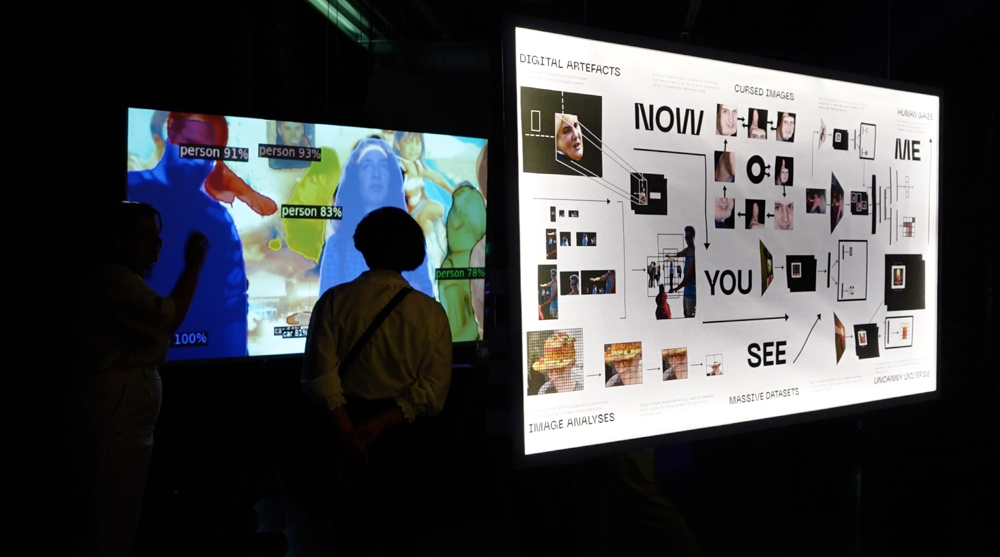

Now You See Me: Re-appropriating the Visual Landscape of Our Digital World
moving image / interactive installation / 2022
Now You See Me: Re-appropriating the Visual Landscape of Our Digital World is an interactive-video installation reflecting upon the layer of absurdity that occurs within the effort to mimic human perception with algorithms.
Using real-time object-detection model the installation brings the world of abstraction to our physical space by placing the viewer within the flat landscape of mathematical observations.


© 2021 Radina Yotova
All rights reserved
All rights reserved